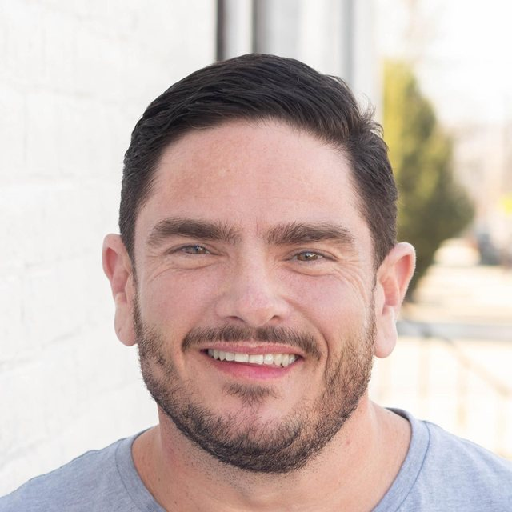

Bobby Angel
I build systems where software meets money, and now I'm building AI tools that automate that work.
My career has been centered around finance, technology and operations. At Harland Financial Solutions I supported banking software for savings and loans and worked with FDIC auditors on compliance and disaster recovery testing. At Mental Health America I helped build a federally audited representative-payee program from the ground up.
Today I'm building Python and Claude tools that automate the work I used to do by hand: reconciliations, invoice matching and data analysis. I'm looking for a Forward Deployed Engineer role where I can sit with a client, learn the real workflow and ship the fix.
Based in Covington, Kentucky (Cincinnati area)

Experience
Fifteen years building and supporting banking systems, then years serving at-risk community members. Now bringing both to AI.
Skills
| Area | Skills |
|---|
Active Products
Working tools I've built. Each one solves a real problem I ran into, and each one links to a live demo.
These cards are placeholders. Product details, screenshots and demo links still need to be added.
Let's talk
I'm looking for Forward Deployed Engineer and AI implementation roles, especially in financial services. The fastest way to reach me is email.